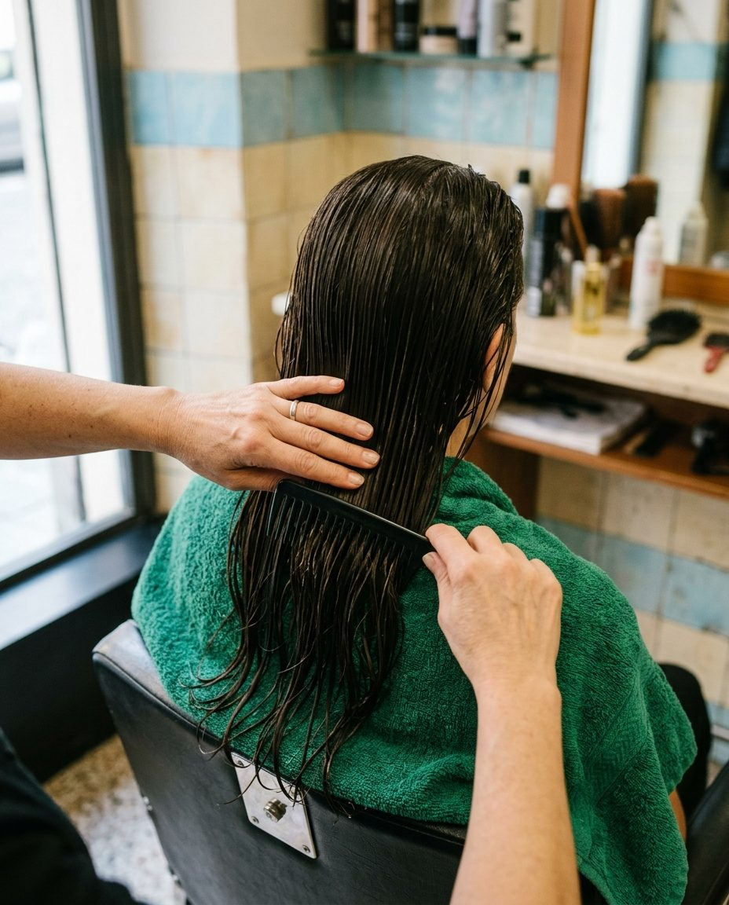

Sui capelli bagnati usa un pettine a denti larghi e comincia dagli ultimi cinque centimetri. Quando scorre senza tirare, sali di una spanna. Si spezzano molto meno e le doppie punte arrivano più tardi.